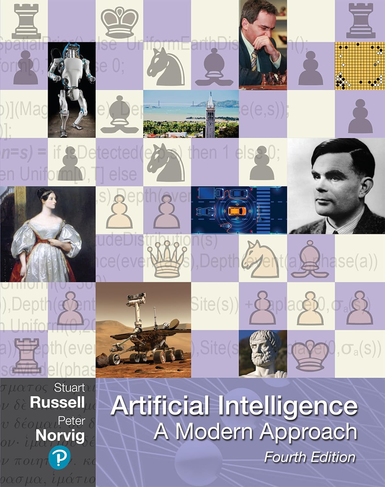

EP15.TOKT11121 (DS) & EP16.TOKT11121 (AI) · National Economics University
Introduction to Artificial Intelligence
- Instructors
-
Dr. Trong-Nghia Nguyen
Dr. Nguyen Thi Kim Ngan - Format
- In-person
- Prerequisite
- EP16.TOKT11108
National Economics University, 207 Giai Phong street, Bach Mai ward, Hanoi, Vietnam
Main course textbook

Artificial Intelligence: A Modern Approach (4th Edition)
The primary textbook covering all fundamental AI topics including search, knowledge representation, reasoning, machine learning, and applications. This is the main reference material for the course.
About this course
This course aims to deliver a comprehensive overview of Artificial Intelligence, its implications, applications, and the skills to leverage it. The course begins by describing what the latest generation of artificial intelligence techniques can do. After an introduction to some basic concepts and techniques, the course illustrates both the potential and current limitations of these techniques with examples from a variety of applications.
We spend some time on understanding the strengths and weaknesses of human decision-making and learning, specifically in combination with AI systems. Exercises will include hands-on application of basic AI techniques as well as selection of appropriate technologies for a given problem and anticipation of design implications. In a final project, groups of students will participate in the creation of a simple AI-based application.
Prerequisite: EP16.TOKT11108 (Fundamental Programming Concepts in Python)
Prerequisites
If you'd like to waive the prerequisites, please send an email to the instructor. For each prerequisite, please clearly list which courses you've taken are equivalent, and highlight it in the transcript.
- Prerequisite: EP16.TOKT11108 (Fundamental Programming Concepts in Python)
- Programming experience: Python programming skills required
- Mathematical background: Basic understanding of algorithms and data structures
- Software tools: Python, numpy, sklearn, Kaggle
Logistics
- Lecture format: In-person
- Lecture location: National Economics University, 207 Giai Phong street, Bach Mai ward, Hanoi, Vietnam
Grading
- Participation (20%): Attendance, homework check, volunteering for class questions. Homework and discussion are posted in the LMS. Code is uploaded to Kaggle.
- Midterm Exam / Project (20%): Project including presentation and submitted report. Criteria: content mastery; problem-solving skills; critical thinking; application of knowledge; time management.
- Final Exam (60%): Comprehensive examination covering all course topics.
Resources
Related courses
- This course is part of the Data Science and Artificial Intelligence program at National Economics University.
- Prerequisite course: EP16.TOKT11108 (Fundamental Programming Concepts in Python).
- Course codes: EP15.TOKT11121 (DS) & EP16.TOKT11121 (AI).
Course materials
- All course materials are available through the LMS (Learning Management System).
- Code submissions and collaborative work are done through Kaggle.
- Course syllabus: Download PDF
- Supplementary reading: AI và Con người (AI and Humans), NEU: Download PDF
Textbooks
- [1] Artificial Intelligence: A Modern Approach (4th Edition)
- Main textbook covering all fundamental AI topics including search, knowledge representation, machine learning, and applications. Published by Pearson. Download PDF
- [2] Artificial Intelligence Fundamentals for Business Leaders: Up to Date With Generative AI
- Practical insights into how AI is applied in business contexts, complementing the theoretical foundation from the main textbook.
- [3] Introduction to Artificial Intelligence
- Additional reference material published by Springer for supplementary reading.
Software
- Python
- The primary programming language used in this course for implementing AI algorithms and working with data.
- NumPy
- The fundamental package for scientific computing with Python.
- scikit-learn
- A comprehensive machine learning toolkit for Python.
- Kaggle
- Used for code submission and collaborative work on AI projects.
Lectures
Future schedule is subject to change.
| Week | Date | Type | Topics | Slides & materials |
|---|---|---|---|---|
| 1 | 2024-09-03 | Lecture |
Introduction to Artificial Intelligence
|
Intro to AI
Searching 1
|
| 2 | 2024-09-10 | Practice |
BFS and DFS — Hands-on
|
|
| 3 | 2024-09-17 | Lecture |
Informed Search Strategies
|
Searching 2
|
| 4 | 2024-09-24 | Practice |
Heuristic Search — Hands-on
|
|
| 5 | 2024-10-01 | Lecture |
Optimal Search (A*, Greedy Search)
|
Optimal Search
|
| 6 | 2024-10-08 | Practice |
A* and Greedy Search — Implementation
|
|
| 7 | 2024-10-15 | Lecture |
Adversarial Search
|
Adversarial Search
|
| 8 | 2024-10-22 | Practice |
Game-Playing Agents — Hands-on
|
|
| 9 | 2024-10-29 | Lecture |
Propositional Logic — Syntax, Semantics, and Inference
|
Propositional Logic
|
| 10 | 2024-11-05 | Practice |
Propositional Logic — Practical Exercises
|
Propositional Logic (continued)
|
| 11 | 2024-11-12 | Lecture |
First-Order Logic — Representation and Inference
|
First-Order Logic
|
| 12 | 2024-11-19 | Practice |
First-Order Logic — Reasoning and Implementation
|
|
| 13 | 2024-11-26 | Lecture |
From Search and Logic to Learning Systems
|
Intro to ML & DL |
| 14 | 2024-12-03 | Lecture |
From Search and Logic to Learning Systems (continued)
|
Intro to ML & DL |
| 15 | 2024-12-10 | Lecture |
Supplementary Topics and the AI Project Pipeline
|
|
Assignments
Homework policy: Homework is uploaded after each class. Submit your work in the LMS. Homework correction will be given the next session. Students who volunteer to do exercises will get extra points.
Submission: Assignments should be submitted through the LMS (Learning Management System). Code should be uploaded to the Kaggle platform.
Collaboration policy: You may form study groups and discuss problems with your classmates. However, you must write up the assignment solutions and the code from scratch, without referring to notes from your joint session.
Due: After each class · Submit via LMS
| Assignment | Description | Due | Files |
|---|---|---|---|
| Homework 0 | Course Introduction and Setup | 2024-09-03 | LMS forum |
| Homework 1 | Search Strategies (BFS and DFS) | 2024-09-10 | LMS forum |
| Homework 2 | Informed Search Strategies | 2024-09-17 | LMS forum |
| Homework 3 | Optimal Search (A* and Greedy Search) | 2024-10-01 | LMS forum |
| Homework 4 | Adversarial Search (Minimax and Alpha-Beta Pruning) | 2024-10-15 | LMS forum |
| Homework 5 | Logic and Neural Networks | 2024-11-12 | LMS forum |
Course project
The course project constitutes a significant part of the midterm evaluation (20%). Each team selects one topic from the provided project list. The project consists of two main parts:
- Presentation: 10–12 minutes per team, to be delivered next week.
- Report: Due one week after the presentation date.
Submit the presentation and report (all .pdf files) via email or Zalo. There
are awards for best presentation and best report.
Project workflow
- Identify a real-world problem.
- Model it as a search problem (state space search).
- Apply at least 2–3 search algorithms (BFS, DFS, Greedy, A*, etc.).
- Implement and test with code.
- Compare results (expanded nodes, time, solution quality).
- Relate findings back to the real-world context.
Suggested report structure
- Introduction: Real-world background of the problem.
- Problem Formulation: Search problem representation.
- Algorithms: Description of applied algorithms.
- Experiments & Results: Comparison table and visual examples.
- Discussion: Analysis of results and insights.
- Response to Reviewers: Questions and answers from the presentation.
- Conclusion: Summary and findings.
Project example: the 8-Puzzle
Purely theoretical version. "Initial state → Goal state. Apply BFS, GBFS (heuristic = misplaced tiles), A* (heuristic = Manhattan distance). Compare number of expanded nodes and solution depth."
Real-world interpretation. The 8-Puzzle can be modeled as seat arrangement in an international conference. There are 9 chairs (8 delegates + 1 empty spot). The organizer must arrange guests so that each delegate sits in the correct assigned seat. A valid operation is swapping a delegate with an adjacent empty chair. The goal is the correct seating arrangement with the fewest moves.
Sample introduction for the report. "In international conferences, the correct arrangement of delegates according to diplomatic protocols is essential. We can model this seating arrangement task as the 8-Puzzle problem, where each tile represents a delegate and the empty tile represents an unoccupied chair. The objective is to reach the final correct arrangement with minimal movements. In this study, we apply classical search algorithms (BFS, GBFS, A*) and compare their performance in terms of solution depth and number of expanded nodes, thereby evaluating the effectiveness of AI search methods for real-world organizational tasks."
Important notes
- Creativity is required. Every project must be grounded in a real-world scenario (politics, society, traffic, healthcare, environment, education, etc.), not only in abstract puzzles.
- The "Response to Reviewers" section is mandatory. This is what makes your project unique compared to standard coursework.
- Visualization is encouraged. Teams are encouraged to use visualizations, simulations, or examples to make the application clearer.
Project submission
Upload your project files in PDF format:
- Submit both your presentation slides and final report as PDF files.
- File naming convention:
TeamName_Presentation.pdfandTeamName_Report.pdf. - Deadline: report due one week after the presentation date.
Upload project files to Google Drive
You will need to sign in with your account to upload files. If you encounter any issues, please contact the instructors.
People

Instructor
Member of the Business AI Lab (BAI LAB) research group, lecturer at the Department of Data Science and Artificial Intelligence, School of Technology, National Economics University. Graduated with a Bachelor's degree in Information Technology from the University of Science — Hue University (2018), Master's degree in Computer Science from Hanoi University of Science and Technology (2021), and PhD in Computer Science from Chonnam National University, Korea (2025).
Co-Instructor
Lecturer of the Department of Data Science and Artificial Intelligence, School of Technology, National Economics University. Member of the Research and Technology Transfer Group on Artificial Intelligence and Data Science, Faculty of Tourism and Information Technology, School of Technology, National Economics University. PhD in Computer Science, INSA de Lyon, France (2013).